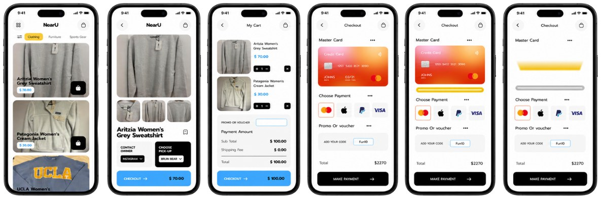

NearU — Campus Community Marketplace
NearU is a hyper-local university platform that lets students buy and sell goods within their immediate community. I designed the experience to prioritize proximity, trust, and simplicity over traditional online marketplaces.
